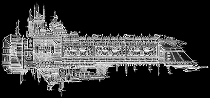

Battlefleet Gothic |
Armageddon |
Armageddon |
Playing BFG |
Report Your |
|
His Will - Imperial Apocalypse Class Battleship Admiral Parol took command of the ancient battleship His Will after his heroic actions on board the Daedalus during the Stacarta Raids of 967.M41. His Will proved to be a fine ship to serve as a platform for Parol's combat capabilities and his careful use of over-charging the Apocalypse class' lance batteries at precisely the right time in battle has become legendary. His Will is an exemplary battleship, even for the venerable Apocalypse design and its crew are rated as the best in the Armageddon fleet, His Will has become the centre of the Imperial fleet in the war and the calculated tactics of Admiral Parol have further elevated the renown this ship has amassed in its millennia long service. Admiral Parol is currently waiting for more Naval reinforcements to enter the Armageddon system, to take the war against the Ork fleet to a more even footing. With his fleet hopelessly outnumbered, he has been forced to disperse his ships and strike at the enemy whenever the opportunity presents itself. In this role, the incredible firepower of the Apocalypse-class has not been found wanting. His Will has proved superlative in these hit and run attacks, being fully capable of wiping out entire escort squadrons within minutes with devastating lance salvos, before the Ork ships are able to close range in order to use their own weapons. His Will remains the Imperial Navy's prime asset in the Armageddon system. |